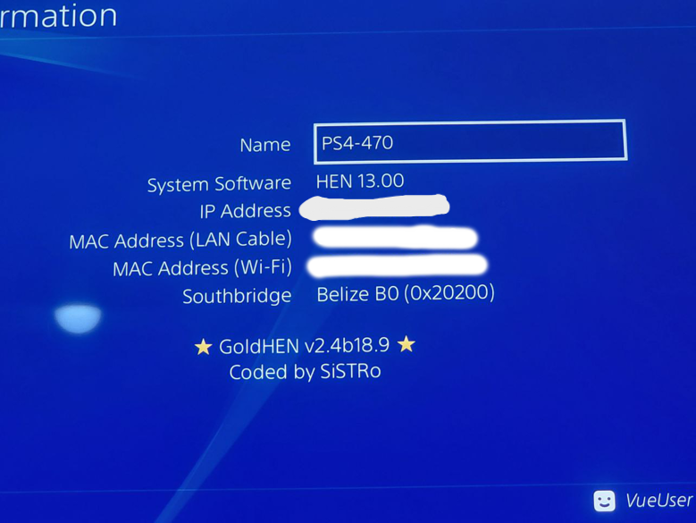

Início
imagem sei la
O GoldHEN é uma das ferramentas mais conhecidas dentro do cenário de modificação do PlayStation 4. Ele funciona como um “Homebrew Enabler”, ou seja, um software que permite a execução de aplicações não oficiais e o acesso a funcionalidades que não estão disponíveis no sistema padrão do console. Seu uso é geralmente associado a estudos sobre segurança, personalização de sistemas e desenvolvimento de softwares alternativos.O GoldHEN é uma das ferramentas mais importantes no cenário de desbloqueio (jailbreak) do PlayStation 4. Em resumo, ele é um tipo de “Homebrew Enabler”, ou seja, um software que libera funções ocultas do sistema e permite funcionalidades extras.
Origem
print do ps4 mostrando o goldhen e o "coded by sistro"
O GoldHEN foi desenvolvido por um programador conhecido pelo pseudônimo SiSTR0, com o objetivo de aprimorar ferramentas anteriores de liberação do sistema. Ele surgiu a partir da evolução de métodos de exploração do sistema do PlayStation 4, trazendo melhorias significativas em estabilidade, compatibilidade e recursos disponíveis. Com o tempo, tornou-se uma das soluções mais utilizadas dentro da comunidade de desenvolvimento homebrew.

Funcionalidades
O GoldHEN oferece diversas funcionalidades voltadas à ampliação do uso do sistema, entre elas:
- Execução de aplicativos homebrew
- Acesso a funções ocultas do sistema
- Ferramentas de debug e análise
- Suporte a modificações e personalizações